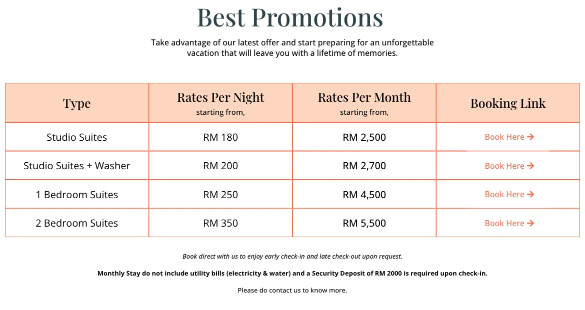
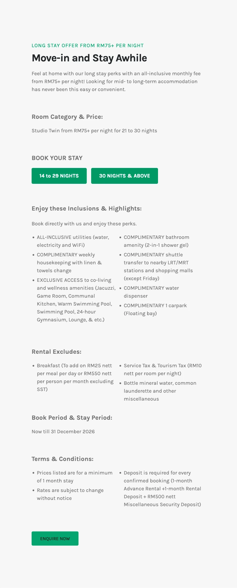
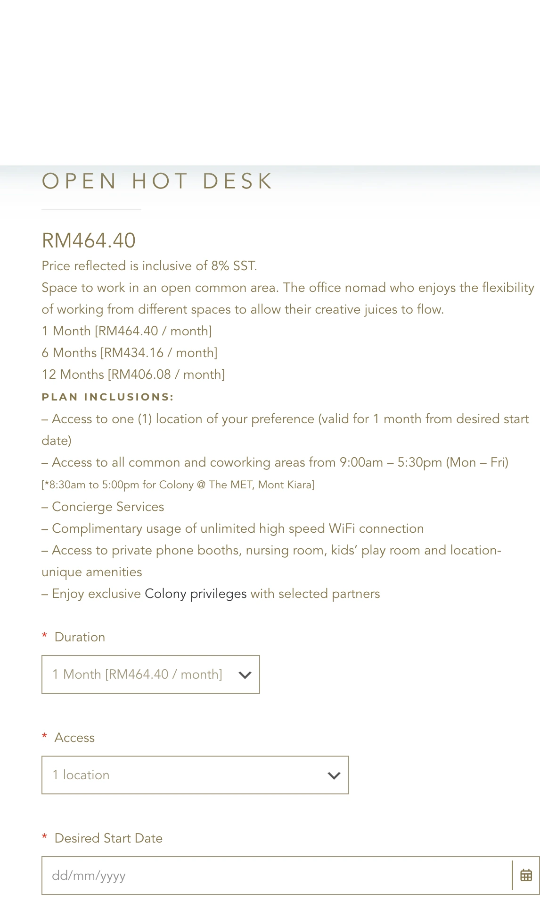
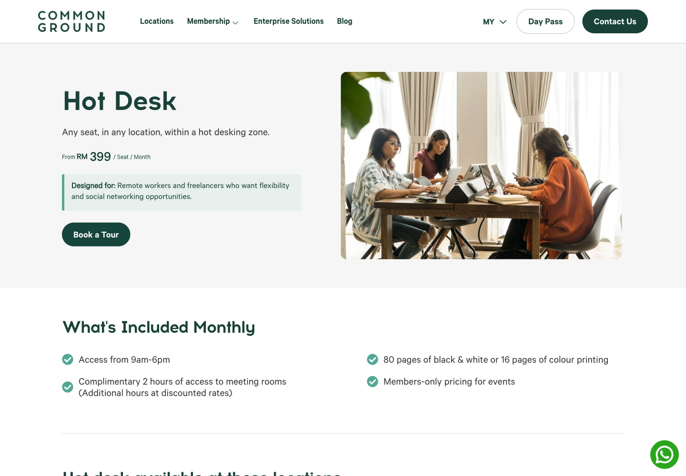
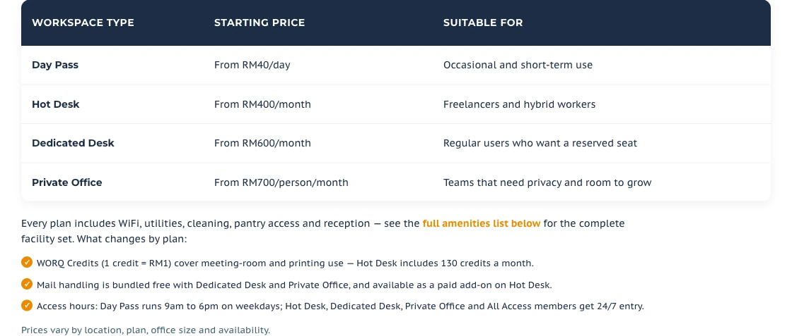
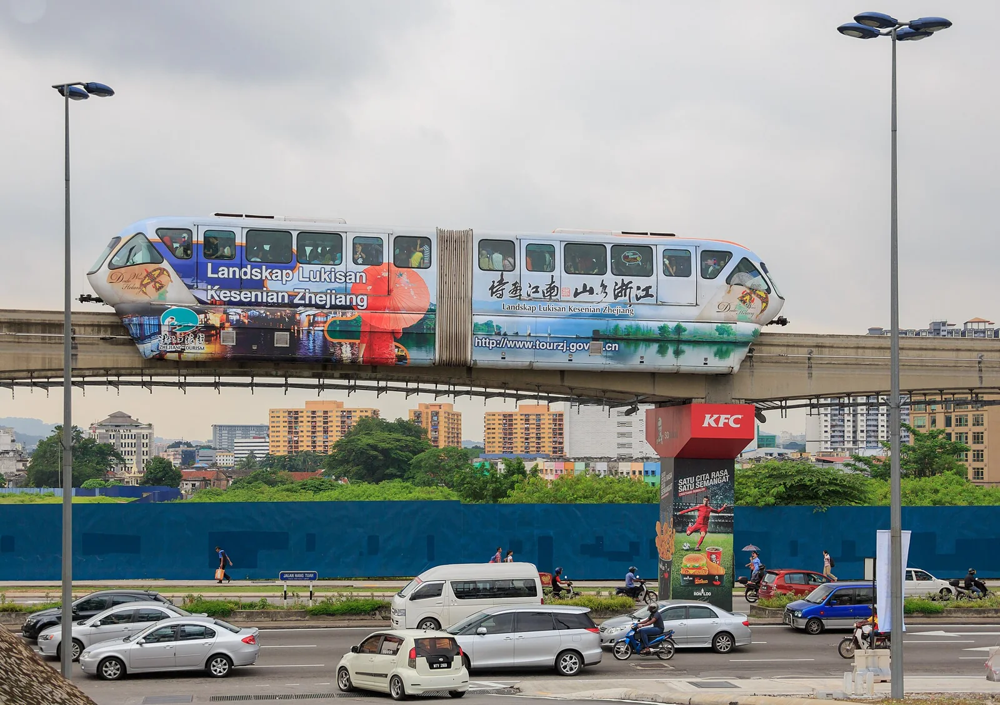
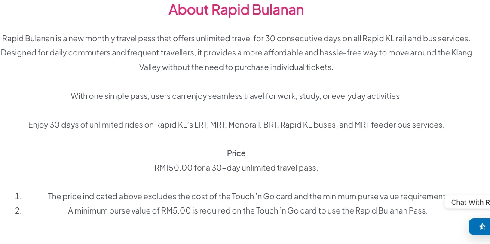

去吉隆坡前要确认什么
中国大陆普通护照；以实际入境准许日为准
区域气候参考；不能保证无雨
不拿固定月份保证当天空气
未现场测速；重要会议另备网络
雨天路线、开放出入口和晚间回程逐处看
Asia/Kuala_Lumpur · UTC+8
CommonGroundKLCC官网提到GrandHyatt泳池/健身福利，但仅PrivateOffice会员享有；HotDesk不能按此预期。 Common Ground KLCC at Menara Darussalam
KomuneCheras的Level3A设施只开放给30晚及以上长住客；官网长住接驳车排除周五。 Komune Living & Wellness rooms Komune Living & Wellness Cheras long-stay offer
WORQTTDI月票虽24/7门禁，空调只在每日10–22；Bangsar的空调是工作日8–18、周六8–13。夜间会议选址要分开问。 WORQ Frequently Asked Questions
DesaPahlawan的VCRRitchie周三休息，Galloway则每天7:30–17:30，晚间会议不能靠Galloway营业时间兜底。 VCR official contact: outlets, addresses and hours
RapidKL的RapidBulanan月票对全用户开放，150MYR/30连续天，卡费与最低余额5MYR另计；该月票仅覆盖列明RapidKL网络。 Rapid KL official Rapid Bulanan product
房租之外，水电和工位也要算
在吉隆坡一个人住30晚，默认舒适预算是5,314 令吉，按2026-10-19参考汇率约合8,697 元。房费由一人承担，日间工位月票也算在内。餐饮、通勤和水电按表里预留；机票、保险和签证另算，押金也单独准备。
三档是你找房前可以调整的额度。NOVO公开月租2,500令吉起，水电另计，尚未取得指定日期的30晚含费总价；拿到房东或运营方的书面报价后，用它替换住房预留。
- 三档金额用来安排预算，整间房由一人付款。实际房价、空房和附加费仍要按入住日期确认。
- 总额包含所列预留和参考票价；未确认的税费与超量费用、机票、签证、保险及押金另计。
各项换算后都取整，总额则先加原币、再统一换算，因此逐项相加可能有一点差额。
| 项目 | 原币金额 | 显示币种 | 依据与条件 |
|---|---|---|---|
| 住房预留 | 3,000 令吉 | 4,909 元 | 预算预留计价条件房费预留3,000令吉/30晚；没有指定日期的整间房含费确认单。 30晚按一笔月价参照或住房预留规划，最终日期和含费范围仍须确认。 |
| 共享办公（1张整月票） | 464 令吉 | 760 元 | Colony Open Hot Desk: 1-month product · 核价 2026-10-20计价条件为30晚预留1张整月票；不把月票除以30当日票。 Colony Open Hot Desk一个月商品价464.40令吉，含8%服务税；从所选起始日计一个月，所选单店，常规周一至五9:00–17:30，The MET为8:30–17:00；不可退款，指定分店名额与押金仍须确认。月票不能按天拆卖，晚间与周末不在此票覆盖内。 |
| 餐饮与饮料 | 900 令吉 | 1,473 元 | 预算预留计价条件30晚预算预留，允许日常外食和部分咖啡聚餐；没有按全城均价或个人旧账推算。 按所选30晚调整，不代表实际消费。 |
| 市内交通 | 250 令吉 | 409 元 | Rapid KL official Rapid Bulanan product · 核价 2026-10-20计价条件30晚预算预留，可比较150令吉Rapid Bulanan通票，再为接驳和少量网约车留额度；机场往返与跨城交通另算。 按所选30晚调整，不代表实际消费。 |
| 水电与住房杂费 | 200 令吉 | 327 元 | 预算预留计价条件30晚预算预留，单独覆盖月租排除的水电及少量住房杂费；未取得房间计价或空调用量，超出按实付另计，税费和清洁须随总报价确认。 按所选30晚调整，不代表实际消费。 |
| 手机、洗衣与日用品 | 150 令吉 | 245 元 | 预算预留计价条件30晚预算预留，通信、洗衣与日用品按个人习惯调整。 按所选30晚调整，不代表实际消费。 |
| 周末活动 | 200 令吉 | 327 元 | 预算预留计价条件30晚预算预留，容纳少量市内付费活动，不代表门票组合报价。 按所选30晚调整，不代表实际消费。 |
| 机动预留 | 150 令吉 | 245 元 | 预算预留计价条件30晚预算预留，处理临时交通或生活杂费；押金及换房备用金独立准备。 按所选30晚调整，不代表实际消费。 |
| 总计 | 5,314 令吉 | 8,697 元 | 按原币总额统一换算 |
预算金额取整显示，逐项相加可能与总额略有差别；下方商家报价保留原有小数。
按每天的通勤路线找公寓
你每天去哪儿工作，房子就沿着那条通勤路线找。Jalan Ampang的NOVO、KLCC的工位和Cheras的Komune分处不同位置。房源写着“吉隆坡”或“近车站”，还得看每天实际怎么走。
NOVO的Studio月价2,500令吉起，带洗衣机房型2,700令吉起，水电不含，另收2,000令吉押金。问价时补上具体日期，再核税费和清洁安排；这两笔起价都不能当作已确认的30晚全包订单。
Komune Cheras的长住页列了按晚价和几种租期条件，要让住处确认你这30晚适用哪一种。Level 3A设施要求住30晚及以上，接驳车周五不运行；问房价时一起确认。
| 地点与房型／票型 | 原币报价与来源 | 包含、另付与押金 | 租期与时段 | 使用条件与局限 |
|---|---|---|---|---|
| NOVO by WIDEBED Studio整间（343平方英尺）月租起价 Jalan Ampang / Desa Pahlawan 315 Jalan Ampang, Desa Pahlawan, 55000 Kuala Lumpur 看位置 | 2,500 令吉/月 价格核对：2026-10-20 NOVO Serviced Suites by WIDEBED: monthly rates and conditions | 水电不含；官网列FreeWi-Fi，长住具体线路/速度未测 未说明 押金：2,000 令吉 | 公开月租，指定30晚适用与最短租期需确认 指定日期30晚含费价请另确认 | 不是指定日期30晚全包可订报价；入住日期、供房、税、清洁须询价。 |
| NOVO by WIDEBED 带洗衣机Studio整间月租起价 Jalan Ampang / Desa Pahlawan 315 Jalan Ampang, Desa Pahlawan, 55000 Kuala Lumpur 看位置 | 2,700 令吉/月 价格核对：2026-10-20 NOVO Serviced Suites by WIDEBED: monthly rates and conditions | 水电不含 未说明 押金：2,000 令吉 | 公开月租，指定30晚适用与最短租期需确认 指定日期30晚含费价请另确认 | 与2500房型相差200MYR，适合先问洗衣频率和公共洗衣成本，不能视为当前可订差价。 |
| Komune Living & Wellness Cheras Studio Twin整间长住夜价起价 Cheras / Bandar Tun Razak No. 21, Jalan Tasik Permaisuri 2, Bandar Tun Razak, 56000 Kuala Lumpur 看位置 | 报价期：booking and stay now–2026-12-3175 令吉＋/晚起，30晚总价待询 价格核对：2026-10-20 Komune Living & Wellness Cheras long-stay offer Komune Living & Wellness rooms | 水、电、WiFi含 房价+；服务税与旅游税未含。原文TourismTax10MYR/room/night 押金：未公开／须询价 | 原页21–30晚、14–29晚/30+按钮与最短一月条件有冲突，按日期询价 指定日期30晚含费价请另确认 | 不生成2250月价。先让运营方给单人整间30晚最终书面总额。押金条款是1monthadvance+1monthrentaldeposit+500miscdeposit；不能把预付租金全部叫可退押金。 |


晚上开会，工位还能不能用
按平时开会的时间挑工位。预算采用Colony一个月464.40令吉的Open Hot Desk，含8%服务税，只能在所选分店的工作日日间使用。常规时段是9:00至17:30，The MET另有时段；晚上开会还得用房间或其他确认能用的地方。
Common Ground的399令吉是月票起价，不能直接当成KLCC分店最终价。WORQ TTDI月票可全天进出，空调却只在每天10:00至22:00运行，且取消须提前一个月书面通知。试日票时，也把通话空间和你真正会用到的时段问清楚。
| 地点与房型／票型 | 原币报价与来源 | 包含、另付与押金 | 租期与时段 | 使用条件与局限 |
|---|---|---|---|---|
| Colony Open Hot Desk，所选单店一个月 KLCC / Vipod Residences Vipod Residences, Kuala Lumpur 看位置 | 464.40 令吉/月 价格核对：2026-10-20 Colony Open Hot Desk: 1-month product | 含WiFi；月票仅所选1分店 含8%SST 押金：未公开／须询价 | 自所选开始日计算一个月 OpenHotDesk Mon–Fri09:00–17:30 | 周一至五9:00–17:30；The MET例外8:30–17:00。不可退款；不保证指定分店/日期有名额。押金未说明。 |
| Common Ground 共享热桌月票起价 KLCC / Jalan Pinang Level 6, Menara Darussalam, Jalan Pinang, Kuala Lumpur City Centre, 50450 Kuala Lumpur 看位置 | 399 令吉/人/月 价格核对：2026-10-20 Common Ground Hot Desk | 含无线/有线网络与咖啡茶水（运营方设施说明；未测速度） 未说明 押金：未公开／须询价 | 最短一个月 HotDesk09:00–18:00; onsite staff Mon–Fri | 9:00–18:00；含会议室2小时与打印额度。起价不保证KLCC或每个分店可用；押金未知。 |
| WORQ TTDI TTDI共享热桌月票 TTDI / Glo Damansara Glo Damansara Shopping Mall, TTDI 看位置 | 400 令吉/月 价格核对：2026-10-20 WORQ Frequently Asked Questions | 网络、水电、公共茶水；24/7门禁，空调每日10:00–22:00 未说明 押金：未公开／须询价 | 最短一个月；取消须提前一个月书面通知 HotDesk24/7entry; aircon10:00–22:00daily; staffMon–Fri09:00–18:00 | 起价/余位可能变；押金与税未明确；24/7门禁不等于24/7空调。 |
| WORQ 日票起价 TTDI / Glo Damansara Glo Damansara Shopping Mall, TTDI 看位置 | 40 令吉/天 价格核对：2026-10-20 WORQ coworking space Kuala Lumpur WORQ Frequently Asked Questions | 含WiFi、水电及茶水等公共设施 未说明 押金：未公开／须询价 | 所选分店一个工作日 周一至五09:00–18:00，周末与公休不适用 | 所选分店1天，周一至五9:00–18:00，周末及公休不适用；不可把它当深夜/周末工位。 |



分店不同，营业日也不同
住处附近可以看看VCR Galloway、103 Coffee Chow Kit和VCR Ritchie，但各店营业时间不同。Ritchie周三休息，Galloway每天17:30打烊，晚上需要用的地方要另外找。
这里列出了地址和营业时间。有没有插座、网速怎样、能否带电脑久坐，都还要问店家。
4家符合条件
Bukit Bintang / Galloway
VCR Galloway
只核地址和营业时间；未核插座、WiFi速度、可开会和电脑长坐规则。
地址：2, Jalan Galloway, 50150 Kuala Lumpur
营业时段：Daily07:30–17:30
核读 2026-10-20；网速、插座和久坐规则以各店说明为准。
Chow Kit
103 Coffee Chow Kit
只核地址和营业时间；第三方旧营业时间不同，以官网为准。未核办公许可/插座/实测网络。
地址：9, Jalan Yap Ah Shak, Chow Kit, 50300 Kuala Lumpur
营业时段：Daily07:30–20:00
核读 2026-10-20；网速、插座和久坐规则以各店说明为准。
Desa Pahlawan / Ritchie’s Pavilion
VCR Ritchie
与NOVO同在DesaPahlawan可比较，但未测门到门路线。周三休息；只支持地址/时间，不支持办公设施。
地址：319, Ritchie’s Pavilion, Persiaran Ritchie, Desa Pahlawan, 55000 Kuala Lumpur
营业时段：Thu–Tue07:30–18:00; Wednesdayclosed
核读 2026-10-20；网速、插座和久坐规则以各店说明为准。
KLCC / Platinum Park
FEEKA by the Park
物业官方页可核品牌及营业时间，准确门牌和坐标未核；不能与JalanMesui分店混写，也不推断可工作。
地址：具体门牌待确认
营业时段：Daily08:00–22:30
核读 2026-10-20；网速、插座和久坐规则以各店说明为准。
没有找到符合条件的地点，试试换个街区或清除筛选。




从公寓门口到真正的车站入口
查路线要从住处真正能走的门口出发，走到车站入口，再到工位，也想想下雨时怎么走。NOVO不在KLCC站楼上，官网写“近车站”，我们没走过那条路，不能只凭地图说步行几分钟就到。
每天会搭Rapid KL通勤，可以比较150令吉、连续30天的Rapid Bulanan通票，所有用户均可购买。卡费另算，卡内还须保留最低余额；它覆盖列明的Rapid KL网络，机场快线等其他交通需要另核。
住宿、工位和咖啡馆可分别开关，只显示位置已经核对过的地点。这里没有可用的步行路线数据，也没现场走过；订房前请自己核对出入口和步行时间。
地点名单可直接使用；底图需要网络。
地点名单（离线仍可读）
- NOVO Serviced Suites by WIDEBEDJalan Ampang / Desa Pahlawan315 Jalan Ampang, Desa Pahlawan, 55000 Kuala Lumpur打开位置看出处已核坐标；步行时长未核
- Komune Living & WellnessCheras / Bandar Tun RazakNo. 21, Jalan Tasik Permaisuri 2, Bandar Tun Razak, 56000 Kuala Lumpur打开位置看出处坐标未核，暂不放地图标记
- Colony @ KLCCKLCC / Vipod ResidencesVipod Residences, Kuala Lumpur打开位置看出处已核坐标；步行时长未核
- Common Ground KLCCKLCC / Jalan PinangLevel 6, Menara Darussalam, Jalan Pinang, Kuala Lumpur City Centre, 50450 Kuala Lumpur打开位置看出处坐标未核，暂不放地图标记
- WORQ TTDITTDI / Glo DamansaraGlo Damansara Shopping Mall, TTDI打开位置看出处坐标未核，暂不放地图标记
- VCR GallowayBukit Bintang / Galloway2, Jalan Galloway, 50150 Kuala Lumpur打开位置看出处已核坐标；步行时长未核
- 103 Coffee Chow KitChow Kit9, Jalan Yap Ah Shak, Chow Kit, 50300 Kuala Lumpur打开位置看出处已核坐标；步行时长未核
- VCR RitchieDesa Pahlawan / Ritchie’s Pavilion319, Ritchie’s Pavilion, Persiaran Ritchie, Desa Pahlawan, 55000 Kuala Lumpur打开位置看出处坐标未核，暂不放地图标记
- FEEKA by the ParkKLCC / Platinum Park具体门牌待确认打开位置看出处坐标未核，暂不放地图标记
| 路线与服务 | 人次票价与来源 | 适用范围、班次与日期 |
|---|---|---|
| Rapid Bulanan，连续30天通票 Rapid KL | 150 令吉/连续30天 核价 2026-10-20 Rapid KL official Rapid Bulanan product | 卡费另计、须最低余额5MYR；全用户开放；覆盖RapidKLLRT/MRT/Monorail/BRT/公交/MRT接驳，不承诺KTM或ERL。 具体乘车日及班次时刻请核运营方原页 |

住满30晚，别踩入境期限
中国大陆普通护照短期访问每次免签最长30天；30晚订单须另对照入境获准停留日。
2025年7月17日起生效的协定：每180日累计停留不超过90日，护照有效期至少6个月。居住、就业和学习等目的不在短访免签范围内。
适用旅客在入境前3日内填写官方MDAC，登记页说明包括提交当天；按本人情况核对豁免。
远程工作看DE Rantau等适当资格。MDEC FAQ列3至12个月，可续最多12个月；职业、收入和材料条件须逐项核，不把旅游免签当工作许可。
China embassy in Malaysia: mutual visa exemption FAQ Malaysia Digital Arrival Card official registration MDEC DE Rantau Pass FAQ v10
雨天怎么去上班
如果月份可以选，先比较2月或6至7月，再核自己的行程。马来西亚气象局把半岛大部分地区10至11月列为主要雨峰，4至5月还有次峰；这是区域气候说明，不能当成吉隆坡某周的天气预报。
下雨时，住处到工位的最后一段路怎么走？临时留在房间能不能开会？选房时把这两件事问清。空气质量则看临近出发时的监测，单靠月份判断不了。
全年湿热；10–11月雨峰参考区域气候，6–7月或2月可先比较，但不能保证无雨。
METMalaysia区域气候说明；不是吉隆坡站逐月定量常年值或当月预报。
下午行程留机动；选住宿到工位的真实雨天路线，并准备能在住所通话的备用位置。烟霾需查实时监测，不承诺固定月份安全。
低价月账里，房费怎么算
记录✍️吉隆坡学英语1个月完整花费多少钱
作者在吉隆坡学英语，公开个人月账含房租、交通、饮食娱乐，并描述每周聚餐、超市和打车频次。房租700马，交通120马，饮食娱乐878马；原报合计1689马与分项相差9马。
作者的住法：作者记录2025年7月一个月；未给起止日或晚数；租住类型未明。入住人数：作者未写明。
| 作者分项 | 自报金额 | 租期／人数口径 | 边界 |
|---|---|---|---|
| 住宿 | 700 令吉 | 作者所述一个月 | 房型和包含项未知 |
| 交通 | 120 令吉 | 作者所述一个月 | 作者说自己住得远 |
| 餐饮与娱乐 | 878 令吉 | 作者所述一个月 | |
| 作者自报生活总额 | 1,689 令吉 | 作者所述一个月 | 作者原报；分项合计1698，差9马，不改写成对账准确的总数 |
| 语言课程 | 2,000 令吉 | 作者所述一个月 | 游学附加项，不并入远程工作生活预算 |
| 作者自报含学费总额 | 3,689 令吉 | 作者所述一个月 | 作者原报；不能与分项同时视作数学一致 |
资料范围：依据原帖文字整理；图片、视频和评论未核对。
正文称详细开销见图片；图片未看，仅采用正文出现的数字。 居住人数、房型、街区、精确夜数、押金和水电网口径未知。 正文人民币换算按作者当时汇率，且含学费总额换算另有误差，公开文案应优先保留马币。 2025年个人经历，不能证明2026年10月仍可订同价。
阅读作者原帖吉隆坡和大理，工作方式也要一起比
和大理比较时，两边都由一个人承担整间房、住30晚。吉隆坡默认购买日间共享办公月票，大理默认在房间工作；两张卡反映各自住法，比较前先选你真正需要的工作方式。
吉隆坡这页先帮你把公寓、轨道交通与工位接起来；大理选村居，还要看买菜、取快递和夜间回家的路。把日常会走的路一起考虑，再比较两座城的住房与交通预留。
下方同为单人30晚舒适预算；每座城市默认工作方式各自列明，不能把房内办公与工位月票当成相同配置。
问清这30晚一共付多少
填好到达日期和晚数，向住处要一份一个人住整间房的总价。请对方写清房费之外收哪些税和清洁费，水电怎么算，押金又在什么时候退。
如果你要在房间开会，也一并确认工作桌和房间网络。住公寓时再问常用出入口，别只用楼宇在地图上的位置估算通勤。模板由你复制或下载后自行发送。
吉隆坡月住常见问题
一个人住吉隆坡30晚，舒适档准备多少？
按默认住法，预算为5,314 令吉，按2026-10-19参考汇率折合8,697 元，包含住房与生活预留，以及一张Colony日间工位月票。机票、保险和签证费用另算，押金独列；住房额度仍须由具体日期的最终报价替换。
NOVO的2,500令吉月租已经含水电吗？
水电另计，官网另列2,000令吉押金。2,500令吉是Studio月租起价，指定日期是否有房、30晚是否适用，以及税和清洁费用，都需要运营方书面确认。
外国旅客可以买150令吉的Rapid通票吗？
Rapid Bulanan官方产品页写明向所有用户开放，150令吉覆盖连续30天。卡费与最低余额另算，使用范围限官方列明的Rapid KL网络，机场快线等交通另核。
买了Colony月票，晚上和周末也能办公吗？
预算里的Open Hot Desk只限工作日日间：通常9:00至17:30，The MET为8:30至17:00，也只能用所选分店。夜间和周末要另找确认能用的地方，月票不等于全天开放。
WORQ TTDI的24小时门禁也代表整夜有空调吗？
TTDI的空调时段是每天10:00至22:00，和全天门禁分开。月票最低一个月，取消还须提前一个月书面通知；如果只打算住30晚，购买前就要问清取消日和最终收费。
小红书标题4,500元的公寓，能当一个人整租价吗？
“🍟薯条蘸番茄🍅”写的是两位成人带三个孩子，两家分摊Kuchai Sentral两房两卫公寓。正文整套一个月8,900元、含水电网，标题约4,500元是每家分摊口径，不能直接套给一个人承担整套房费。
住30晚，可以直接订成免签30天的行程吗？
先对照抵达、离境日期和入境获准停留截止日。中国大陆普通护照短期访问的互免签期限，与住宿订单的晚数要分别核对；旅游停留也不能代替远程工作所需资格，具体目的看官方要求。
住处到工位看着很近，可以直接签一个月吗？
确认公寓真正能走的门口、车站入口，也看看下雨时怎么走。“🍟薯条蘸番茄🍅”遇到过近处的门关着、实际要绕路的情况。这是作者的经历，我们没替你走过具体路线，建议试住后再付长住费用。
价格来源与图片署名
作者：Roamorrow 编辑部。本文链接不收取返佣。
价格来自运营方公开的月租和工位票价，个人经历都链接到原作者。住房和生活费中哪些是预算额，表里单独标明。我们没有取得指定日期的全包住房订单，也没做现场测速或走过通勤路线。
个人账单沿用作者写明的租期和人数。小红书材料依据发布文案，图片和评论未核对；Reddit依据读过的主帖及具名评论。换算使用2026-10-19欧洲央行参考汇率，银行差价和支付手续费另计。
查看价格与资料出处
- NOVO Serviced Suites by WIDEBED: monthly rates and conditions · 核读 2026-10-20
官网正文与真实浏览器核读。当前Best Promotions表与旧Opening Promotions区块日价冲突，但两处月价一致。月价起价不等于指定日期可订全包30晚；只引用当前月价表。 - Colony Open Hot Desk: 1-month product · 核读 2026-10-20
原页列出一个月票价和使用条件，价格截图见办公段；未购买套餐。 - Colony KLCC location · 核读 2026-10-20
地点页曾列430+起价，含税预算采用商品页的价格；地址和位置另参考OpenStreetMap。 - Common Ground Hot Desk · 核读 2026-10-20
官网正文和浏览器已核。399 MYR为套餐起价，不能保证每个分店都以此价可购。税费和押金未标，最低1月；9–18使用时间不能改写24/7。 - Common Ground KLCC at Menara Darussalam · 核读 2026-10-20
官网正文已核。Grand Hyatt泳池/健身房只向Private Office会员开放，不能推给Hot Desk；泳池时段周一至五9–17且先到先得。 - WORQ coworking space Kuala Lumpur · 核读 2026-10-20
官网与真实浏览器核价。套餐与地点有价差；不引用页面尚有变动的Private Office价格，不把运营方WiFi宣传写实测网速。 - WORQ Frequently Asked Questions · 核读 2026-10-20
官网FAQ正文已核。Hot Desk月费与空调使用时间逐分店不同；月票最低1个月，提前1个月书面通知取消。 - WORQ TTDI at Glo Damansara Shopping Mall · 核读 2026-10-20
真实浏览器核读；不将页面Private Office每人促销价误认为单人整间办公室价。 - Komune Living & Wellness Cheras long-stay offer · 核读 2026-10-20
官网和浏览器已核。房价写Studio Twin75+ MYR/晚 for21–30nights，但按钮14–29/30+、条款最低1月互相不一致。保留为询价候选，不乘30冒充确认月价。预订/入住期间至2026-12-31。 - Komune Living & Wellness rooms · 核读 2026-10-20
官网房型正文已核。Level3A设施仅30晚及以上长住客开放。 - VCR official contact: outlets, addresses and hours · 核读 2026-10-20
官网正文与直接HTTP取得200。只核地址及营业时间，没有证明插座、网速、允许开会或长坐政策。 - 103 Coffee official cafe locations · 核读 2026-10-20
官网分店正文已核；Chow Kit营业时间7:30–20:00，与第三方2025指南8–20:30不同，优先官网。 - Platinum Park official tenant page: FEEKA by the Park · 核读 2026-10-20
物业官网正文可读，支持品牌、位置在Platinum Park和营业时间；没有在此页列门牌/经纬度/办公设施，故地址与坐标未知。备选咖啡，不与Jalan Mesui分店混淆。 - China embassy in Malaysia: mutual visa exemption FAQ · 核读 2026-10-20
核读Q1/Q2/Q4/Q7：2025-07-17生效，中国普通护照有效至少6月、单次不超30日、任意180日累计不超90日；居住就业学习等不属协定。Q5日数计算解释的是进入中国，不能套给进入马来西亚。 - Malaysia Digital Arrival Card official registration · 核读 2026-10-20
官方登记页直接HTTP200，正文提示行程必须在提交日期起3日内（含提交日）；只核空表，不填写、不提交个人资料。官方入口https://imigresen-online.imi.gov.my/mdac/main 。 - MDEC DE Rantau Pass FAQ v10 · 核读 2026-10-20
官方PDF15页已核：职业、年收入、3–12月可续12月、旅游准证不能直接转换。收入条目写minimum，而材料段用>符号，临界值须向MDEC确认。 - MDEC DE Rantau programme page · 核读 2026-10-20
当前官网正文只核到准证入口和FAQ下载链接。搜索缓存中的处理延迟公告未在当前正文复核，不用于发布。 - METMalaysia: Malaysia Climate · 核读 2026-10-20
官方气候概述；半岛大部分地区主雨峰10–11月、次峰4–5月，部分地区6–7月较少雨、2月次低。是区域气候描述，没有吉隆坡站逐月样本期，也不是具体月份天气预报。 - Rapid KL official Rapid Bulanan product · 核读 2026-10-20
原页票价150MYR/连续30天，向所有用户开放；卡费和最低余额5MYR另计。仅覆盖列明的RapidKL网络，不含机场快线。 - OpenStreetMap public places snapshot · 核读 2026-10-19
本仓库web/public/places/kuala-lumpur.json，Overpass snapshot2026-10-19T01:47:25Z，ODbL。仅用门店名称匹配的坐标，不沿用与官网冲突营业时间；不是现场测绘。 - NOVO official linked Google Maps place · 核读 2026-10-20
位置取自NOVO官网链接的Google Maps地点：3.1602612, 101.739395。 - ECB 欧元参考汇率 · 核读 2026-10-20
图片署名与许可
Bukit Bintang路口，摄于2024年。Renek78，CC0；复用已缩放转码的站点照片。 摄影：Renek78；CC0。原图与授权页。已等比缩放并转码WebP，文件无裁切。
Imbi与Hang Tuah之间的吉隆坡单轨，摄于2014年。CEphoto / Uwe Aranas，CC BY-SA3.0；已等比缩放及转码。 摄影：CEphoto, Uwe Aranas；CC BY-SA 3.0。原图与授权页。已等比缩放并转码WebP，文件无裁切。
报价截图来自各段链接的商家原页，只转换了WebP格式，图中价格未改。旧报价在图旁标出年份，文章没有使用社交平台配图。
押金、做饭规则和房间维护
租房经历要连着条件看。Reddit用户anniedaqueen在2024年提到，Taman Desa的住处除房租外，还要一个月损坏押金和半个月水电押金。房型与精确租期没有交代，这条经历能提醒你问清入住资金，不能拿来证明现在的独住月租。
同一座城也有相反体验。ADF21a原计划住三个月，因房源规则和维护评价最后只留三周；同帖的WurzelGummidge则说自己有一次不错的Airbnb体验。先逐项确认做饭规则和房间维护，再决定是否付满一个月。
以下经历来自各位作者的原帖。我们没有在这些住处实住，比较花费时要看租期、是否合租、有没有人分摊，以及作者没写明的费用。
小红书 · 🍟薯条蘸番茄🍅 · 2025-07-02
吉隆坡短租公寓！一个月 4500 你觉得值吗？
两位妈妈带3个孩子，租Kuchai Sentral两房两卫公寓一个月，正文整套8900元含水电网，两家各付一半。作者自报配套方便，但原本距幼儿园200米的路线因门关闭而绕行约15分钟，适合提醒确认出入口。
租期：暑假短期插班幼儿园一个月；人数：5；房型：Airbnb两房两卫整套公寓
资料范围：依据原帖文字整理；图片、视频和评论未核对。
这条经历的适用边界
人民币为作者原报币种，未提供马币实付或账单。
一个月的精确晚数未知；未核对2026年房源、配套、步行路线和交通时长。
仅属第三方感受，不能改成本站实测网速、安静度或路线。
标题4500与正文8900整套是分摊口径差异。
Reddit · anniedaqueen · 2024-08-18
Short-term rentals for MYR2,000 a month — Taman Desa experience
在讨论每月短租的帖子中，anniedaqueen自述通过PropertyGuru在Taman Desa找到RM1200的住处，并在追问中说明需签合同，另交一个月损坏押金和半个月水电押金。
租期：作者说找到短租，但具体租期未知；人数：未披露；房型：未披露
资料范围：已核主帖与记录中具名评论及上下文；未展开其他分页，图片未读取。
这条经历的适用边界
2024年自报经历；没有精确租期、房型、人数，不能写成2026年单人30晚整租价。
押金可退条件、退款结果、当月水电实付与网络均未知。
同帖OP报单月方案常见2400–2700且有时不含电，仅为其询价经历，不当作市场统计。
Reddit · ADF21a · 2025-05-13
Kuala Lumpur-What is going on with STRs here — shortened stay
ADF21a原计划在吉隆坡住三个月，因找房时遇到禁止做饭等规则与让其担忧的维护评价，最后只住三周。不能据此判定全城短租都困难；同帖WurzelGummidge有一次Airbnb体验良好的相反经历。
租期：原计划3个月，最后只留3周；人数：未披露；房型：未披露
资料范围：已核主帖与记录中具名评论及上下文；未展开其他分页，图片未读取。
这条经历的适用边界
租房选择和感受为个人叙述，无实际房费、押金和楼宇检查证据。
评论中的族群/宗教相关个体规则不推为普遍事实或法律结论。
同帖相反经历已读，未将负面样本当发生率。
Reddit · WurzelGummidge · 2025年5月（日未核）
Kuala Lumpur-What is going on with STRs here — positive counterexample
WurzelGummidge说自己多次住吉隆坡，只有一次用Airbnb，体验良好，公寓不错。这给同楼负面经历提供反例，但不支持任何预算数字。
租期：未披露；人数：未披露；房型：Airbnb apartment
资料范围：已核主帖与记录中具名评论及上下文；未展开其他分页，图片未读取。
这条经历的适用边界
具体年月、租期、房型、人数与价格未知；只用作体验反例。